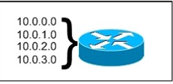
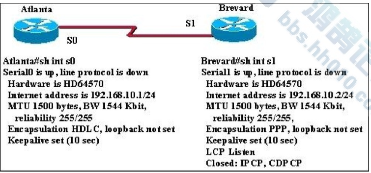
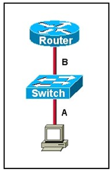

QUESTION 1
Which technology supports the stateless assignment of IPv6 addresses?(Choose two.)
IPv6주소의 상태 비저장 할당을 지원하는 기술은 무엇입니까?(두개 선택)
- DNS
- DHCPv6
- DHCP
- autoconfiguration
정답 : 2,4
QUESTION 2
After you configure the Loopback0 interface, which command can you enter to verify the status of the interface and determine whether fast switching is enabled?
루프 백 인터페이스를 구성한 후 인터페이스의 상태를 확인하고 빠른 스위칭이 활성화되어 있는지 확인하기 위해 어떤 명령을 입력할 수 있습니까?
- Router#show ip interface loopback 0
- Router#show run
- Router#show interface loopback 0
- Router#show ip interface brief
정답 :1
QUESTION 3
What are two requirements for an HSRP group? (Choose two.)
HSRP그룹에 대한 두가지 요구 사항은 무엇입니까? (두개 선택)
- exactly one active router
- one or more standby routers
- one or more backup virtual router
- exactly one standby active route
- exactly one backup virtual router
정답 1,4
QUESTION 4
Which command sequence can you enter to create VLAN 20 and assign it to an interface on a switch?
VLAN20을 생성하고 스위치의 인터페이스에 할당하기 위해 입력할 수 있는 명령 시퀀스는 무엇입니까?
- Switch(config)#Interface gig x/y
Switch(config-if)#vlan 20
Switch(config-vlan)#switchport access vlan 20
- Switch(config)#vlan 20
Switch(config)#Interface vlan 20
Switch(config-if)#switchport trunk native vlan 20
- Switch(config)#vlan 20
Switch(config)#Interface vlan 20
Switch(config-if)#switchport access vlan 20
- Switch(config)#vlan 20
Switch(config)#Interface gig x/y
Switch(config-if)#switchport access vlan 20
- Switch(config)#vlan 20
Switch(config)#Interface vlan 20
Switch(config-if)#switchport trunk allowed vlan 20
정답:4
QUESTION 5
Which three commands can you use to set a router boot image? (Choose three.)
라우터 부팅 이미지를 설정하는 데 사용할 수 있는 세가지 명령은 무엇입니까? (3개 선택)
- Router(config)# boot system flash c4500-p-mz.121-20.bin
- Router(config)# boot system tftp c7300-js-mz.122-33.SB8a.bin
- Router(config)#boot system rom c7301-advipservicesk9-mz.124-24.T4.bin
- Router> boot flash:c180x-adventerprisek9-mz-124-6T.bin
- Router(config)#boot flash:c180x-adventerprisek9-mz-124-6T.bin
- Router(config)#boot bootldr bootflash:c4500-jk9s-mz.122-23f.bin
정답 1,2,3
QUESTION 6
Which two statements about IPv6 and routing protocols are true? (Choose two.)
다음 중 IPv6및 라우팅 프로토콜에 대한 설명으로 옳은 것은 무엇입니까? (두개 선택)
- EIGRPv3 was developed to support IPv6 routing. [EIGRv3은 IPv6라우팅을 지원하도록 개발되었다.]
- OSPFv3 was developed to support IPv6 routing. [OSPFv3은 IPv6라우팅을 지원하도록 개발되었습니다.]
- Loopback addresses are used to form routing adjacencies. [루프 백 주소는 라우팅 승인을 형성하는 데 사용됩니다]
- EIGRP, OSPF, and BGP are the only routing protocols that support IPv6. [EIGRP, OSPF및 BGP는 IPv6을 지원하는 유일한 라우팅 프로토콜입니다.]
- Link-local addresses are used to form routing adjacencies. [링크 로컬 주소는 라우팅 어드밴스트를 형성하는 데 사용된다.]
정답 2,5
QUESTION 7
If primary and secondary root switches with priority 16384 both experience catastrophic losses, which tertiary switch can take over?
우선 순위가 16384인 기본 및 보조 루트 스위치가 모두 치명적인 손실을 입은 경우, 어떤 3차 스위치가 대신할 수 있습니까?
- a switch with priority 20480
- a switch with priority 8192
- a switch with priority 4096
- . a switch with priority 12288
정답 : 1
QUESTION 8
Which two statements about late collisions are true? (Choose two.)
다음 중 충돌 사고에 대한 두가지 설명으로 옳은 것은? (두개 선택)
- They may indicate a duplex mismatch. 이중 불일치를 나타낼 수 있습니다.
- By definition, they occur after the 512th bit of the frame has been transmitted. 정의에 따르면, 프레임의 512번째 비트가 전송된 후에 발생합니다.
- They indicate received frames that did not pass the FCS match. FCS매치를 통과하지 못한 프레임이 수신되었음을 나타냅니다.
- They are frames that exceed 1518 bytes. 프레임은 1518바이트를 초과하는 프레임입니다.
- They occur when CRC errors and interference occur on the cable. 케이블에서 CRC오류와 간섭이 발생할 때 발생합니다.
정답 1,2
QUESTION 9
Which command can you enter to set the default route for all traffic to an interface?
모든 트래픽에 대한 기본 경로를 인터페이스로 설정하려면 어떤 명령을 입력할 수 있습니까?
- router(config)#ip route 0.0.0.0 0.0.0.0 GigabitEthernet0/1
- router(config)#ip route 0.0.0.0 255.255.255.255 GigabitEthernet0/1
- router(config-router)#default-information originate
- router(config-router)#default-information originate always
정답 1
QUESTION 10
Which two spanning-tree port states does RSTP combine to allow faster convergence? (Choose two.)
RSTP가 더 빠른 수렴을 위해 결합한 두개의 분할 트리 포트 상태는 무엇입니까? (두개 선택)
- blocking
- listening
- learning
- forwarding
- discarding
정답 1,2
QUESTION 11
If a router has four interfaces and each interface is connected to four switches, how many broadcast domains are present on the router?
라우터에 4개의 인터페이스가 있고 각 인터페이스가 4개의 스위치에 연결되어 있는 경우, 라우터에는 몇개의 브로드캐스트 도메인이 있습니까?
- 1
- 2
- 4
- 8
정답 3
QUESTION 12
Which command enables IPv6 forwarding on a cisco router?
cisco라우터에서 IPv6전달을 가능하게 하는 명령은 무엇입니까?
- ipv6 host
- ipv6 unicast-routing
- ipv6 local
- ipv6 neighbor
정답 2
QUESTION 13
Refer to the exhibit. What is the most appropriate summarization for these routes?
표시란을 참고하세요. 이러한 경로에 가장 적합한 요약은 무엇입니까?

- 10.0.0.0 /21
- 10.0.0.0 /22
- 10.0.0.0 /23
- 10.0.0.0 /24
정답 2
QUESTION 14
Which set of commands is recommended to prevent the use of a hub in the access layer?
액세스 계층에서 허브를 사용하지 못하도록 권장하는 명령 집합은 무엇입니까?
- switch(config-if)#switchport mode trunk
switch(config-if)#switchport port-security maximum 1
- switch(config-if)#switchport mode trunk
switch(config-if)#switchport port-security mac-address 1
- switch(config-if)#switchport mode access
switch(config-if)#switchport port-security maximum 1
- switch(config-if)#switchport mode access
switch(config-if)#switchport port-security mac-address 1
정답 3
QUESTION 15
A router has learned three possible routes that could be used to reach a destination network. One route is from EIGRP and has a composite metric of 20514560. Another route is from OSPF with a metric of 782. The last is from RIPv2 and has a metric of 4. Which route or routes will the router install in the routing table?
라우터는 대상 네트워크에 도달하는 데 사용할 수 있는 세가지 경로를 학습했습니다. 한 경로는 EIGRP에서 가져온 것으로 복합 메트릭은 20514560입니다. 또 다른 경로는 782의 메트릭을 가진 OSPF에서 온 것이다. 마지막은 RI고 2에서 온 것이고 4를 가지고 있다. 라우터가 라우팅 테이블에 설치할 경로 또는 경로는 무엇입니까?
- the OSPF route
- the EIGRP route
- the RIPv2 route
- all three routes
- the OSPF and RIPv2 routes
정답 2
QUESTION16
Two routers named Atlanta and Brevard are connected via their serial interfaces as illustrated, but they are unable to communicate. The Atlanta router is known to have the correct configuration.
Atlanta와 Brevard라는 이름의 두 라우터는 그림처럼 직렬 인터페이스를 통해 연결되지만 서로 통신할 수 없습니다. Atlanta 라우터는 올바른 구성을 가지고 있는 것으로 알려져 있습니다.

- incompatible IP address
- insufficient bandwidth
- incorrect subnet mask
- incompatible encapsulation
- link reliability too low
- IPCP closed
정답 4
QUESTION 17
A network administrator needs to configure a serial link between the main office and a remote location.The router at the remote office is a non-cisco router. How should the network administrator configure the serial interface of the main office router to make the connection?
네트워크 관리자는 본사와 원격 위치 간의 직렬 링크를 구성해야 합니다.원격 사무소의 라우터는 비시스코 라우터입니다. 네트워크 관리자는 연결하기 위해 본사 라우터의 직렬 인터페이스를 어떻게 구성해야 합니까?
- Main(config)#interface serial 0/0
Main(config-if)#ip address 172.16.1.1 255.255.255.252
Main(config-if)#no shut
- Main(config)#interface serial 0/0
Main(config-if)#ip address 172.16.1.1 255.255.255.252
Main(config-if)#encapsulation ietf
Main(config-if)#no shut
- Main(config)#interface serial 0/0
Main(config-if)#ip address 172.16.1.1 255.255.255.252
Main(config-if)#encapsulation frame-relay
Main(config-if)#authenication chap Main(config-if)#no shut
- Main(config)#interface serial 0/0
Main(config-if)#ip address 172.16.1.1 255.255.255.252
Main(config-if)#encapsulation ppp
Main(config-if)#no shut
정답 4
QUESTION 18
Which layer 2 protocol encapsulation type supports synchronous and asynchronous circuis and has built-in security mechanisms?
어떤 계층 2프로토콜 캡슐화 유형이 동기식 및 비동기식 회로를 지원하고 보안 메커니즘이 내장되어 있습니까?
- Frame Relay
- HDLC
- x.25
- PPP
정답 4
QUESTION 19
Refer to the exhibit. The two connected ports on the switch are not turning orange or green. What would be the most effective steps to troubleshoot this physical layer problem? (Choose three.)
표시란을 참조하세요. 스위치에 연결된 두 포트가 주황색 또는 녹색으로 바뀌지 않습니다. 이 물리적 계층 문제를 해결하는 가장 효과적인 단계는 무엇입니까? (3개 선택)

- Ensure that the Ethernet encapsulations match on the interconnected router and switch ports. 이더넷 캡슐화가 상호 연결된 라우터 및 스위치 포트에서 일치하는지 확인합니다.
- Ensure that cables A and B are straight-through cables. 케이블 A및 B가 직선형 케이블인지 확인합니다.
- Ensure cable A is plugged into a trunk port. 케이블 A가 트렁크 포트에 꽂혀 있는지 확인합니다.
- Ensure the switch has power. 스위치에 전원이 공급되는지 확인합니다.
- Reboot all of the devices 모든 장치를 재부팅합니다.
- Reseat all cables 모든 케이블 다시 장착
정답 2,4,6